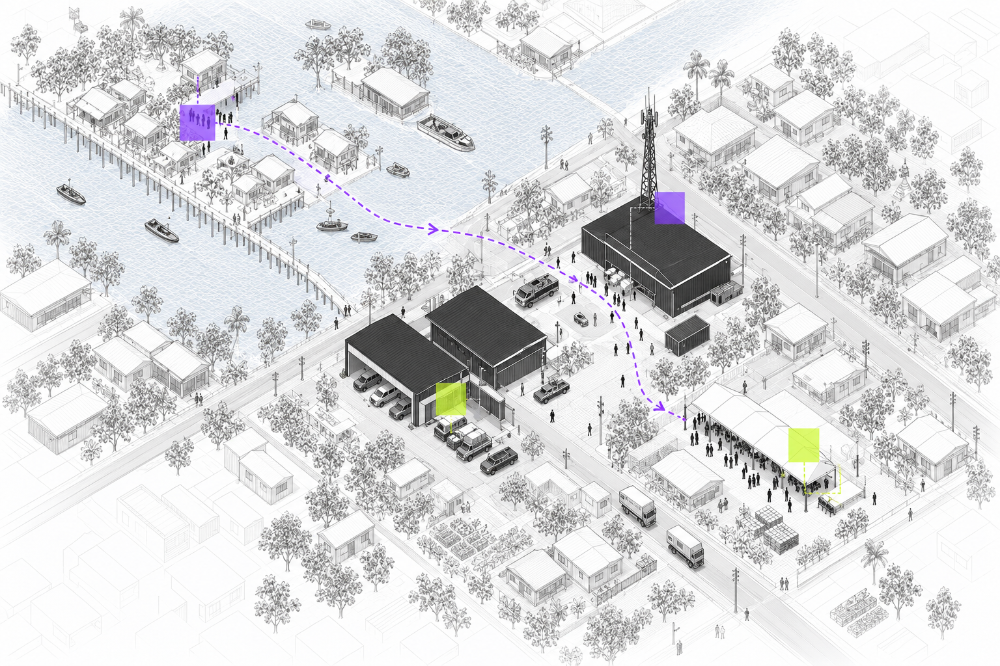
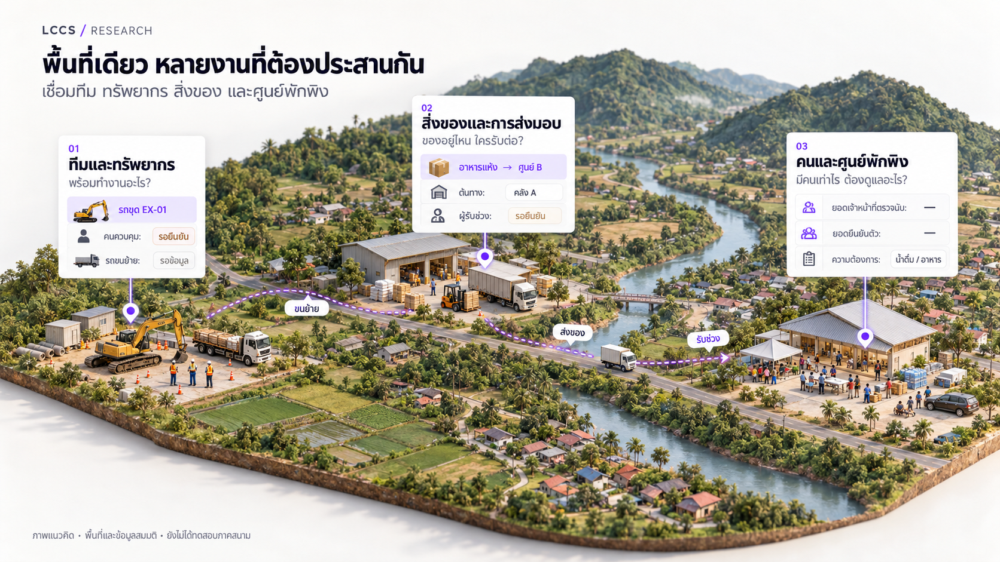
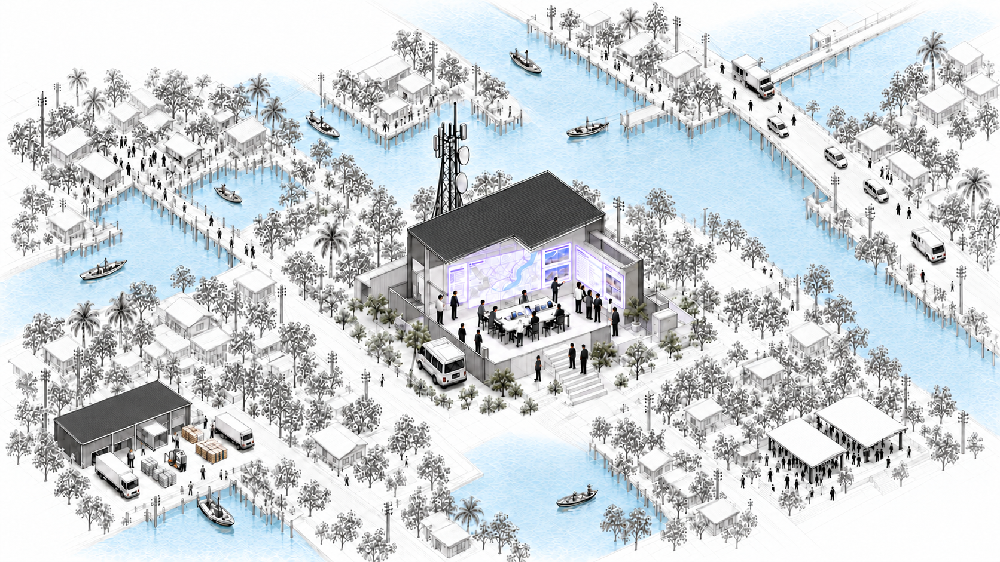

01
เริ่มจากสิ่งที่ต้องการ
มองความต้องการในพื้นที่ ก่อนจับคู่กับสิ่งที่มีคนพร้อมให้
LCCS คือระบบบริหารการเชื่อมต่อชีวิตในภาวะวิกฤต
โครงการแนวคิดและต้นแบบ อยู่ระหว่างพัฒนา
LCCS Research ศึกษาการประสานงานในภาวะวิกฤต
จากคำถามว่า “ใครพร้อมช่วย” สู่ “ยังขาดอะไร และใครจะรับงานต่อ”
LCCS — Life Connection Crisis System
การศึกษาส่วนตัว · ยังไม่ได้ทดสอบภาคสนาม
ไม่ใช่ช่องทางแจ้งเหตุหรือขอความช่วยเหลือฉุกเฉิน

มองความต้องการในพื้นที่ ก่อนจับคู่กับสิ่งที่มีคนพร้อมให้
ทรัพยากรหนึ่งรายการอาจต้องพึ่งคน เส้นทาง และอุปกรณ์อีกหลายอย่าง
การประสานงานต้องมีผู้รับผิดชอบ และข้อมูลที่ตามกลับไปยังต้นทางได้
PERSONAL RESEARCH / CONCEPT EXPLORATION
แนวคิดชุดโปรแกรมที่เชื่อมทีม ทรัพยากร สิ่งของ และศูนย์พักพิง เพื่อเห็นว่า มีอะไร ขาดอะไร และใครรับต่อ
ข้อมูลจำลอง ภาพแนวคิดชุดโปรแกรม

ใครพร้อม และพร้อมทำงานอะไร — มองคนใช้งาน อุปกรณ์ และข้อจำกัดควบคู่กับทรัพยากรที่มี
ต้องการอะไร ของอยู่ไหน ใครรับต่อ — เชื่อมความต้องการกับสิ่งของ การขนส่ง และผู้รับช่วงงาน
มีคนเท่าไร และต้องดูแลอะไร — แยกยอดเจ้าหน้าที่ตรวจนับกับยอดยืนยันตัว พร้อมความต้องการดูแล
โครงการแนวคิดและต้นแบบ อยู่ระหว่างพัฒนา · ยังไม่ได้ทดสอบการปฏิบัติงานภาคสนาม
แผนภาพแนวคิดสำหรับอ่านประกอบ ยังไม่ใช่ระบบรับข้อมูลหรือขอความช่วยเหลือจริง
ข้อมูลจากแต่ละจุดเชื่อมเข้าสู่ภาพรวมร่วม ผู้ประสานงานรับฟัง ทวน และสรุป ก่อนทีมตัดสินใจและสื่อสารแนวทางหรือการสนับสนุนกลับไปยังพื้นที่
ข้อมูลจำลอง ภาพแนวคิดการประสานงาน

จุดรายงานรอบ ICC / 01–04
วิทยุ · โทรศัพท์
วิทยุ
ข้อความ · บันทึก
โทรศัพท์ · ข้อความ
รับฟัง · ทวน · สรุป
ภาพแนวคิดสร้างด้วย AI · ข้อมูลจำลอง · พื้นที่สมมติ · การศึกษาส่วนตัว · ยังไม่ได้ทดสอบภาคสนาม
สองทิศทางที่กำลังพิจารณาสำหรับส่วนต่อขยายของ LCCS
ยังไม่เลือกว่าจะพัฒนาทิศทางใด หรือทั้งสองร่วมกัน · ส่วนนี้ยังไม่มีหน้ารายละเอียดให้สำรวจ